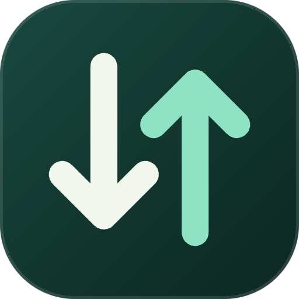

LocalDrop for Android
Your devices. One local connection.
LocalDrop shares files, photos, text and links between an Android device and a browser on the same local network.
Start a private session on your phone. Open the address on another device, or scan the QR code. The transfer goes directly from one device to the other.
No accounts. No cloud. No internet connection required.
LocalDrop is free. LocalDrop Premium is the same app, from €1 — one time, with a more stable background server and a Phone hotspot mode.
Compare and download
Both editions share files, photos, text and links between your devices. No accounts, no cloud, and no internet.
LocalDrop
Free
- Local network through a Wi-Fi router or Ethernet, with approval or a PIN.
- The server stops when you leave the app, unless you keep it running with a notification.
Download LocalDrop for Android (.apk)
- Version: 1.0.0
- Requires: Android 8.0 or later
- Distribution: Direct APK download
LocalDrop Premium
From €1 — one time
- Phone hotspot from the app, or the same local network.
- The server stays more stable while the app is in the background.
- On the hotspot, devices connect without a PIN or approval.
Download LocalDrop Premium for Android (.apk)
- Version: 1.1
- Requires: Android 8.0 or later
- Distribution: Direct APK download
APK installation may require permission to install applications from outside the Google Play Store.
Installation
- Download the APK file to your Android device.
- Open the downloaded file.
- If Android requests permission to install apps from this source, follow the device instructions.
- Confirm the installation.
- Open the app and start the server when you want to share.
Android may display a security warning because this version is not distributed through Google Play.
Only download LocalDrop from the official download button on this page.
Features
A server you start yourself
The server stays off until you tap Start server. While it is running, LocalDrop shows the local address, port and a QR code.
By default the server stops when you leave the app. You can keep it running with a visible notification, and you can set it to stop after a period without transfer or connection activity.
Receive files, photos, text and links
Other devices send content into your Inbox. Filter by type, then open, share, copy or delete what you received.
Received files are saved on the Android device. You decide when to delete them.
Choose exactly what you share
Receive Only is the default. Other devices can send files, text and links to you.
Switch to Send & Receive when you also want them to download items you have enabled on the Shared screen. Add files or a folder, and turn each item on or off. Removing an item from Shared keeps the original file.
See what is happening
Watch an active transfer, cancel it, and see which device is connected. History keeps a local record of successful, failed and cancelled transfers.
You choose who can connect
Approve each browser on the Android device, or use a fresh PIN for the session. If both are on, a browser needs both. You can disconnect a device at any time.
LocalDrop Premium
LocalDrop Premium is the same application. Two things change: the server keeps running more reliably while the app is in the background, and a Phone hotspot mode is added.
Connection
The Home screen has a Connection section with two modes.
- Local network — through a Wi-Fi router or Ethernet, as before, with approval or a PIN.
- Phone hotspot — other devices connect directly to the phone’s own Wi-Fi network.
Hotspot from the app
- Turn the hotspot on and off with one button inside LocalDrop.
- Start server turns the hotspot on automatically if it is not running yet.
- If a hotspot is already on from Android settings, LocalDrop uses it.
- The hotspot is private and has no internet access. Android generates the name and the password.
Two QR codes
- A QR code to join the Wi-Fi hotspot, plus the network name and password, with a Copy button.
- A QR code to open LocalDrop in the browser.
Direct connection
- In hotspot mode, devices connect at once, without a PIN and without approval.
- The browser connects automatically and recognises the device type, such as an iPhone, a Mac, or a Windows PC.
- Only devices connected to the phone’s hotspot are accepted.
Reliability
- The server stays more stable while LocalDrop is in the background.
- If the hotspot is turned off, the server stops and shows a clear message.
- LocalDrop Premium supports the way Android 15 and later represents the hotspot.
Start a hotspot session
- On the Home screen, choose Phone hotspot.
- Turn the hotspot on, or tap Start server and LocalDrop will turn it on.
- On the other device, scan the first QR code, or join the Wi-Fi using the name and password.
- Scan the second QR code to open LocalDrop in the browser.
- The browser connects on its own. Stop the server when you are finished.
Good to know
- Share the hotspot password only with people you trust.
- Nearby devices (Android 13 and later) or Location (Android 8 through 12) is requested only when you use the hotspot.
Screenshots
These screens are from LocalDrop. Phone hotspot mode is part of LocalDrop Premium. Move through the screens with Previous and Next. Select a picture to open it full size.


Start a session
- Connect both devices to the same Wi-Fi or a supported hotspot.
- Open LocalDrop and leave Receive Only selected unless you also want to send files.
- Tap Start server and wait until the status says Running.
- On the other device, open the address in a browser or scan the QR code.
- Approve the connection on Android. Enter the session PIN if you turned that on.
- Send files, text or links. Stop the server when you are finished.
On LocalDrop Premium you can instead use Phone hotspot mode. Other devices join the phone’s Wi-Fi and connect without a PIN or approval.
Use LocalDrop on a trusted private network. Ordinary HTTP is not encrypted, so other people who can see that network may be able to read a transfer.
Privacy
LocalDrop is designed to work without an account and without a cloud service for your files.
- No registration.
- No advertising profile.
- Files move directly between devices on your local network.
- Settings, history and received files stay on the device.
For the full explanation, read the LocalDrop Privacy Policy.
Frequently Asked Questions
Is LocalDrop free?
Yes. LocalDrop 1.0.0 is free. LocalDrop Premium is from €1, paid once.
What does LocalDrop Premium add?
The same app, with a more stable background server and Phone hotspot mode. In that mode other devices join the phone’s own Wi-Fi and connect without a PIN or approval. Only devices on that hotspot are accepted. Local network mode still uses approval or a PIN.
Do I need an account or an internet connection?
No. LocalDrop does not ask you to register. A sharing session runs on your local network and does not need internet access.
Where do received files go?
They are saved on the Android device. By default they stay in LocalDrop’s private Inbox. You can choose another folder in Settings. You decide when to delete them.
Is the transfer encrypted?
No. LocalDrop uses ordinary HTTP. It is meant for a trusted private network. Stop the server when you are finished, and avoid sharing sensitive files on a public or untrusted network.
Why does Android display an installation warning?
Android may display a warning when installing applications downloaded outside Google Play.
If your device asks for permission to install apps from this source, you can allow it in the device settings and then open the APK again.
Technical Support
If you experience problems, discover bugs, or would like to suggest improvements, please contact the developer through the contact page.
When reporting an issue, please include:
- Android version.
- Application version.
- Device model.
- A description of the problem.
- Steps to reproduce the issue, if possible.
Application Information
- Application: LocalDrop and LocalDrop Premium
- Developer: TheXcoder
- Platform: Android
- Free version: 1.0.0
- Premium version: 1.1
- Price: LocalDrop is free. LocalDrop Premium is from €1, paid once.
LocalDrop by TheXcoder
A little closer. Your devices. One local connection.